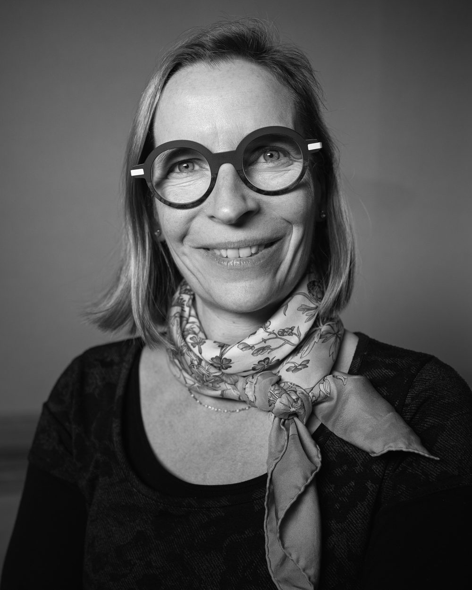
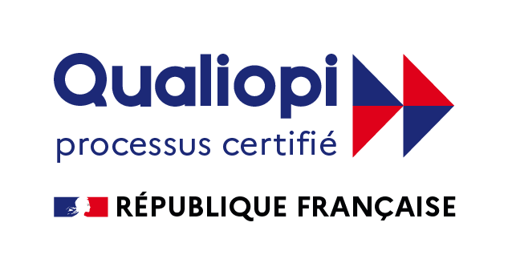

Séminaire d'équipe
Aligner une équipe de direction sur un cap commun, clarifier les rôles et la façon de décider, repartir avec un plan d'action partagé.
- Format
- 1 journée, à partir de 5 personnes
- Tarif
- à partir de 2 000 € HT
Voir le détail
J'accompagne les dirigeants de PME industrielles et tech et leurs équipes. Ingénieure pendant quinze ans, je connais votre monde.

CPE Lyon, Oregon State University, puis quinze ans de conception de puces wifi et bluetooth chez Cisco, LSI Logic et Newlogic, entre la Silicon Valley, Los Angeles et Sophia Antipolis. Mon métier, c'était la vérification. Trouver le défaut que personne d'autre ne trouvait.
En parallèle, j'aidais déjà mes équipes à travailler en bonne intelligence, à accueillir les nouveaux, à désamorcer ce qui coinçait. Un jour, quelqu'un m'a dit que c'était un vrai métier. J'ai fait un bilan de compétences, puis un diplôme de coaching.
Je fais la même chose aujourd'hui, sur des équipes plutôt que sur des circuits. Le non-dit qui bloque tout le monde, c'est le même travail que le bug introuvable.

Aligner une équipe de direction sur un cap commun, clarifier les rôles et la façon de décider, repartir avec un plan d'action partagé.
Voir le détail
Un espace de recul régulier pour clarifier ses décisions stratégiques et affiner sa posture face à l'équipe.
Voir le détail
Traverser une période de tension ou de réorganisation avec un suivi resserré, pas une intervention isolée vite oubliée.
Voir le détail
Outiller les managers sur la prise de poste, la gestion des tensions, la communication managériale, l’organisation ou la cohésion intergénérationnelle. Contenu construit avec vous, jamais un programme générique.
Voir le détail
Certaines prestations sont finançables par votre OPCO, jusqu’à 100 % sous conditions. Work and Joy est référencée dans la plupart des OPCO et vous aide à monter le dossier.
Des entretiens courts avec vous et deux ou trois personnes clés, avant de construire quoi que ce soit. Le sujet annoncé n’est pas toujours le sujet réel.
Un regard extérieur peut dire ce que personne à l'intérieur ne dira. C'est tout l'intérêt de me faire venir, et ça se fait sans casser la dynamique du groupe.
Un plan d'action partagé et une restitution écrite avec les points clés. Pas seulement un bon souvenir de journée.
Les sujets les plus difficiles sont abordés et résolus toujours dans la bonne humeur, sans jamais perdre le cap. Anne-Sophie a la particularité de rendre les process de travail ludiques.

La certification qualité a été délivrée au titre des catégories d’actions suivantes :Actions de formationBilans de compétences
Un premier échange en visio, gratuit et sans engagement, pour voir si le sujet est le bon et si on a envie de travailler ensemble.
Prendre rendez-vousOu par e-mail : contact@workandjoy.org